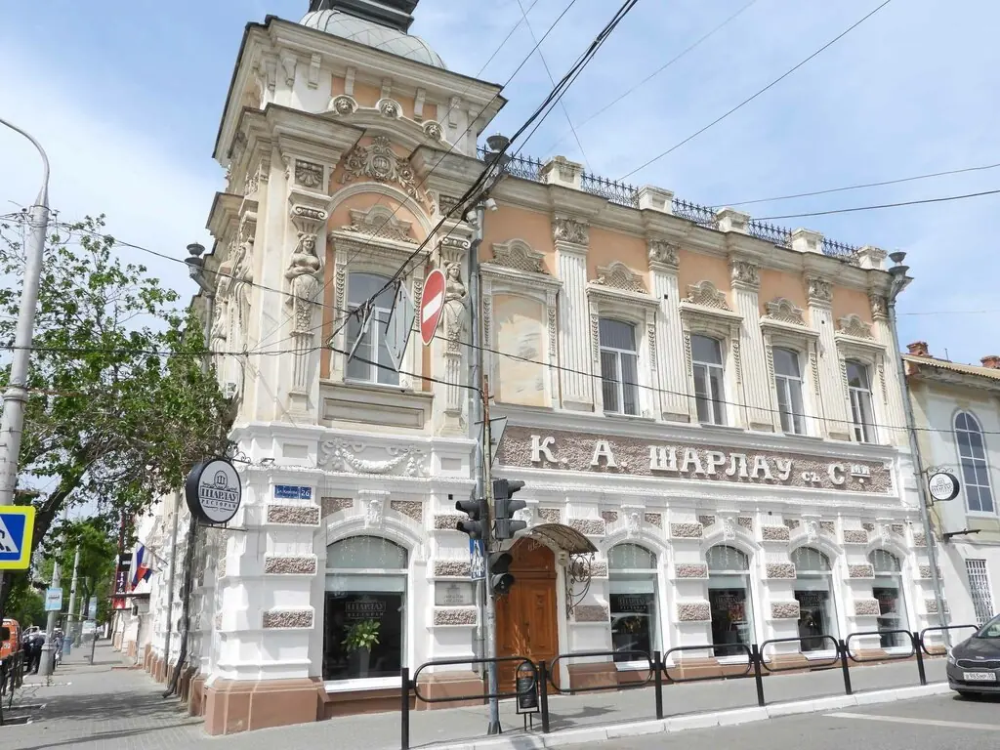

Астрахань+7 8512 44-42-13
— ПОЧТЕННЕЙШЕЙ ПУБЛИКЕ —
Шарлау

Милостиво просим пожаловать в старинный дом на Кирова. Завтраки подаются с девяти часов, десерты в витрине не залёживаются.
4,9 · 2238 оценок
Имеем честь предложить
Полное меню с ценами добавим из вашего прайса.
Отзывы почтенных гостей
Очень нравится бывать в таких необычных местах с историей, ведь Кофейня братьев Шарлау существует в городе с 1887 года.TMash житель
Уютная атмосфера, чуткий персонал и вкусная еда! Десерты просто восторг.Юлия Юлина
Заведение, в которое я хожу большую часть своей жизни.Наталья В.